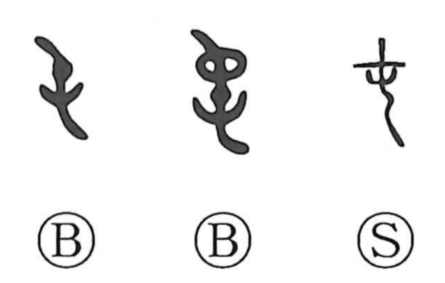

屯

Kun: tamuro | On: ton
to gather ・ to bundle ・ encamp ・ garrison ・ to be troubled
Explanation
This character began as a pictograph of the clustered decorative threads at a garment’s hem, tied off to secure the edge. From that image of threads drawn together it developed senses such as to gather, to bundle, and by extension to encamp or be stationed. In bronze inscriptions, 屯 is also used for 純 and appears in phrases like 玄衣帶屯, referring to formal ritual attire—black garments with embroidered bands and fixed hem decorations. The character further shades into the idea of being beset or troubled, seen in compounds such as 屯遭 and 屯難.